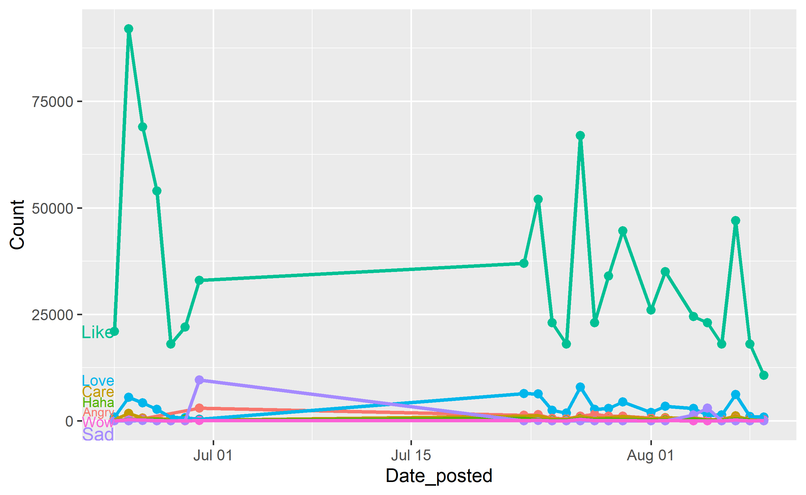
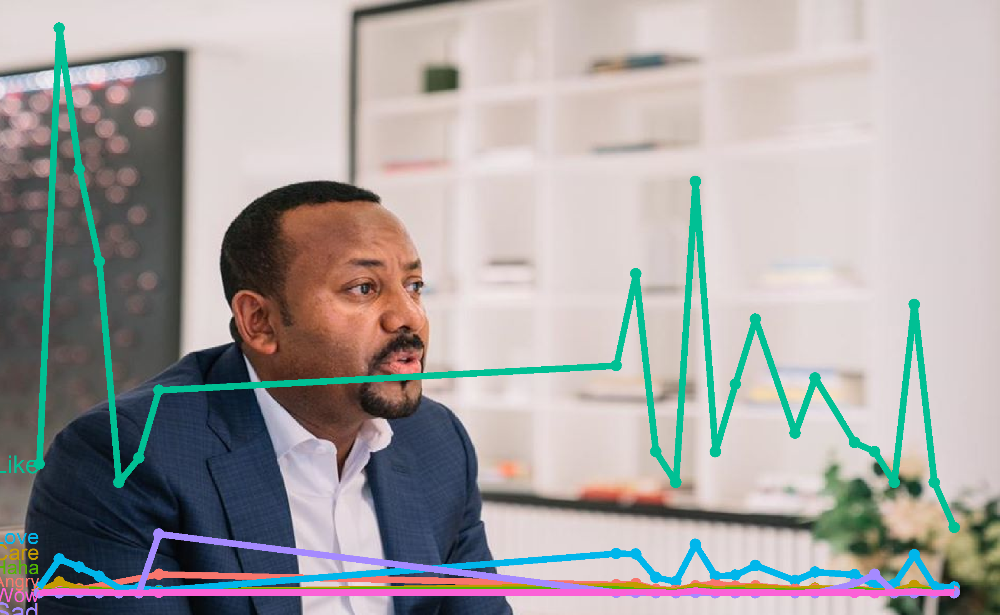
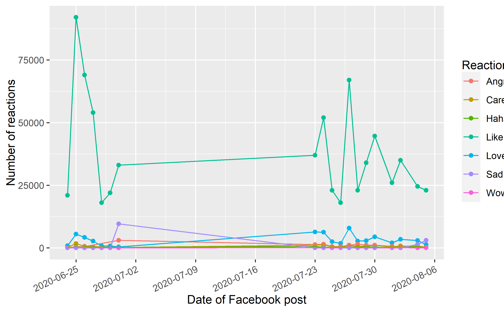
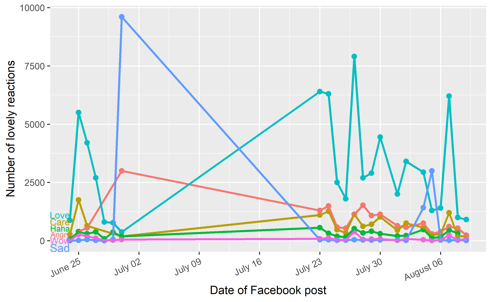
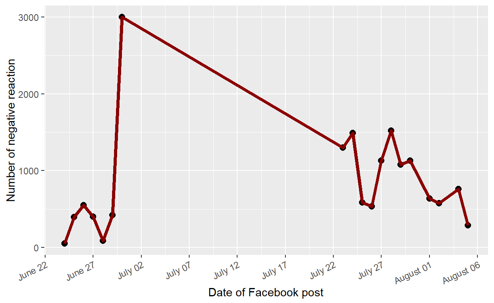
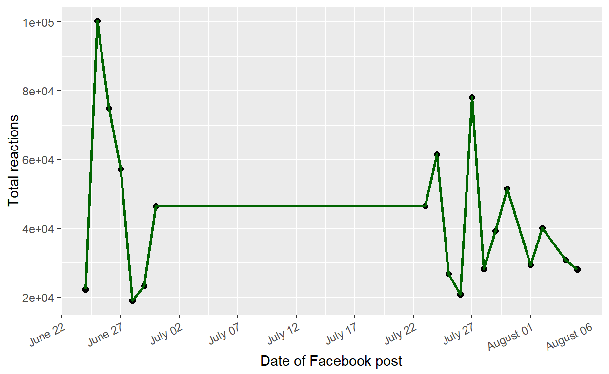
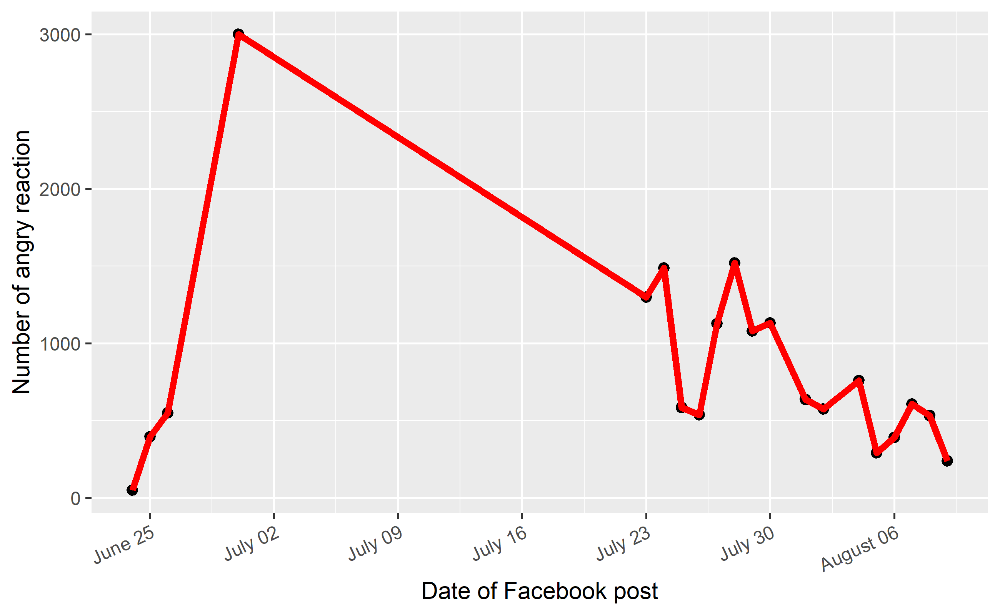
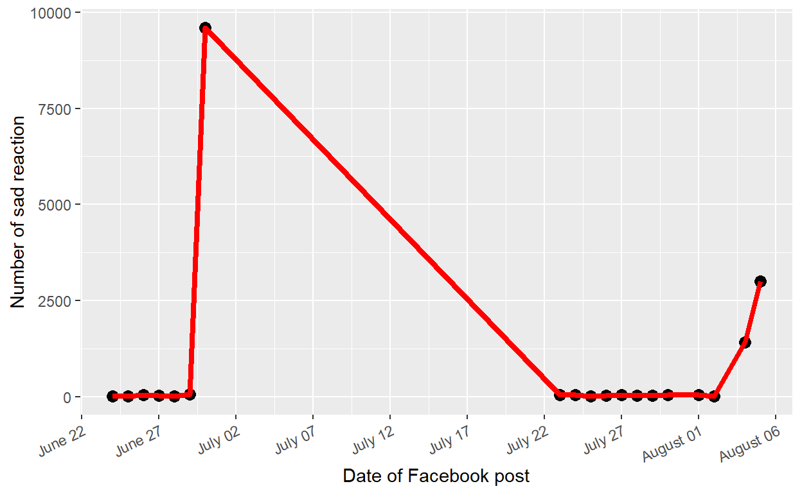

Table of Contents
Disclaimer
This blog post is simply about visualizing the data. I have no political affiliation.
Introduction
Haccalu Hundessa, the popular Ethiopian singer, was killed in June 29, 2020. His death sparked a widespread violence in Oromia region. The government has immediately taken measures to restore law and order. However, several innocent civilians were murdered and public and private properties worth of millions were vandalized. I am sincerely hoping prime minister Abiy’s government will take significant steps in letting an independent and international investigation. As a concerned Ethiopian, I have tried to follow some of the news. To this date, the news is giving me nightmares!
In this short blog posts, I will dive into prime minister Abiy’s one month Facebook activity and his followers reactions using emojis. I will then compare positive (like, care, love, wow) and negative reactions(angry, sad, haha) towards his posts on Facebook. More specificically, I will show you the trend of love, anger and sad reactions.
NB: classifying the reactions into positve/negative may not reflect the actual reaction of the individual to the news. It doesn’t also reflect the contents of the prime minister’s Facebbook post. In addition, internet was locked from the first of july until 23rd of July. That is clearly visible from the plots with a simple horizontal line.
Data
I have manually collected Prime Minister Abiy Ahmed’s one month Facebook posts (From June 24 until August 05). I collected few variables: date Abiy Ahmed posted on Facebook, type of Facebook reaction (eg: Like, Love, angry, sad, etc…) and total number of reactions.
Initialize
Required packages
library(readxl)
library(ggplot2)
library(jpeg)
library(directlabels)
library(dplyr)
library(data.table)
library(scales)
library(readxl)
library(jpeg)
library(ggimage)
abiy_ahmed <- read_excel("abiy_ahmed.xlsx")
# As usual
dim(abiy_ahmed)
[1] 127 4
glimpse(abiy_ahmed)
Rows: 127
Columns: 4
$ Date_posted <dttm> 2020-06-24, 2020-06-24, 2020-06-24, 2020-0...
$ Reaction <chr> "Like", "Love", "Care", "Angry", "Haha", "W...
$ Count <dbl> 21000, 876, 272, 50, 64, 22, 3, 92000, 5500...
$ Death_Haccalu <chr> "Before", "Before", "Before", "Before", "Be...Some descriptives
In total, about a million (824242) people showed some kind of reaction. On average, more than 37,000(sd=20560) peple liked his posts, an average of 939 people hit the angry buttons.
# Mean per reaction
library(dplyr)
abiy_ahmed %>%
summarize(sum=sum(Count, na.rm=T)) # 824242
# A tibble: 1 x 1
sum
<dbl>
1 824242
mean <- abiy_ahmed %>%
group_by(Reaction) %>%
summarize(mean=mean(Count, na.rm=T)) %>%
mutate(mean=round(mean,2)) %>%
ungroup()
sd <- abiy_ahmed %>%
group_by(Reaction) %>%
summarize(sd=sd(Count, na.rm=T)) %>%
mutate(sd=round(sd,2)) %>%
ungroup()
merge(mean, sd)
Reaction mean sd
1 Angry 939.56 698.05
2 Care 720.88 430.87
3 Haha 293.84 144.05
4 Like 37689.47 20560.18
5 Love 3148.05 2146.58
6 Sad 761.95 2262.67
7 Wow 89.58 97.15Visualize
plot <- ggplot(abiy_ahmed, aes(x=Date_posted,
y=Count, col=Reaction)) +
geom_point(size=2) +
geom_line(size=1)
plot1 <- direct.label(plot, "last.qp")
plot1
plot <- ggplot(abiy_ahmed, aes(x=Date_posted,
y=Count, col=Reaction)) +
geom_point(size=2) + geom_line(size=1.5) + theme_void() +
xlab("Date of Facebook post") +
ylab("Number of reactions")
plot1 <- direct.label(plot, "last.qp")
plot2 <- ggbackground(plot1, "abiy4.jpg")
plot2
Reshape the data
For easier manipulation, let’s reshape our data using reshape2.
library(reshape2)
library(ggplot2)
abiy_data <- melt(abiy_ahmed, id=c("Date_posted", "Reaction", "Death_Haccalu"))
abiy_data$Date_posted <- as.Date(abiy_data$Date_posted)
ggplot(abiy_data, aes(x=Date_posted, y=value, col=Reaction)) + geom_point() + xlab("Date of Facebook post") + ylab("Number of reactions") +
geom_line() + scale_x_date(date_breaks = "5 day") + theme(axis.text.x = element_text(angle = 25, vjust = 1.0, hjust = 1.0))
The graph shows the prime minister has much more likes than the other reactions. We will filter our data and see how the trends of love and angry reactions.
How about positive and negative reactions
Positive reactions: “Like”, “Love”, “Wow”, “Care” Negative reactions: “Angry”, “Sad”, “Haha”
abiy_pos <- abiy_data %>%
group_by(Date_posted) %>%
filter(Reaction == c("Like", "Love", "Wow", "Care")) %>%
mutate(number_reaction=sum(value),
reaction="positive reaction")
abiy_neg <- abiy_data %>%
group_by(Date_posted) %>%
filter(Reaction == c("Angry", "Sad", "Haha")) %>%
mutate(number_reaction=sum(value),
reaction="negative reaction")
abiy_pos_neg <- rbind(abiy_pos, abiy_neg)
ggplot(abiy_pos_neg, aes(x=Date_posted, y=number_reaction, col=reaction)) + geom_point(size=2) +
geom_line(size=1) + scale_x_date(date_breaks = "5 day") + theme(axis.text.x = element_text(angle = 25, vjust = 1.0, hjust = 1.0)) +
xlab("Date of Facebook post") + ylab("Reaction") +
scale_x_date(date_breaks = "5 day", labels = date_format("%B %d") ) + theme(axis.text.x = element_text(angle = 25, vjust = 1.0, hjust = 1.0))
Negative reactions
Since there is a lot of positive reaction, we can’t see the negative reaction very much in the above plot. Let’s just focus on the negative reactions. See, it declinined after its maximum on the 30th of June. I assume, this anger is more to the news not to his opinions.
ggplot(abiy_neg, aes(x=Date_posted, y=number_reaction)) + geom_point(size=2.5) +
geom_line(size=1.5, col="darkred") + xlab("Date of Facebook post") +
ylab("Number of negative reaction") +
scale_x_date(date_breaks = "5 day", labels = date_format("%B %d") ) + theme(axis.text.x = element_text(angle = 25, vjust = 1.0, hjust = 1.0))
Number of people reacting to his posts
It is some how declining. Are people loosing interest? I don’t know. I hope not.
abiy_reaction_sum <- abiy_data %>%
group_by(Date_posted) %>%
mutate(number_reaction=sum(value),
reaction="total reaction")
ggplot(abiy_reaction_sum, aes(x=Date_posted, y=number_reaction)) + geom_point(size=2) +
geom_line(size=1, col="darkgreen") + scale_x_date(date_breaks = "5 day") + theme(axis.text.x = element_text(angle = 25, vjust = 1.0, hjust = 1.0)) + xlab("Date of Facebook post") +
ylab("Total reactions") +
scale_x_date(date_breaks = "5 day", labels = date_format("%B %d") ) + theme(axis.text.x = element_text(angle = 25, vjust = 1.0, hjust = 1.0))
Are people getting more angry at the the prime minister after Haccalu’s death?
See how the anger tops the 30th of july and then it fell down like an avalance
angry <- abiy_data %>%
group_by(Date_posted) %>%
filter(Reaction == "Angry")
abiy_data %>%
group_by(Death_Haccalu) %>%
filter(Reaction == "Angry") %>%
summarize(mean(value))
# A tibble: 2 x 2
Death_Haccalu `mean(value)`
<chr> <dbl>
1 After 1080.
2 Before 333.
ggplot(angry, aes(x=Date_posted, y=value)) + geom_point(size=2) +
geom_line(size=1.5, col="red") +
xlab("Date of Facebook post") + ylab("Number of angry reaction") +
scale_x_date(date_breaks = "5 day", labels = date_format("%B %d") ) + theme(axis.text.x = element_text(angle = 25, vjust = 1.0, hjust = 1.0))
How about love reactions?
It looks like people are getting less angry at his posts. But, are they loving his posts? I don’t think so. But, let’s see.
love <- abiy_data %>%
group_by(Date_posted) %>%
filter(Reaction == c("Care", "Love")) %>%
mutate(love_reaction=sum(value),
reaction="love reaction")
ggplot(love, aes(x=Date_posted, y=love_reaction)) + geom_point(size=2.5) +
geom_line(size=1.5, col="darkgreen") +
xlab("Date of Facebook post") + ylab("Number of lovely reaction") +
ylab("Number of lovely reactions") +
scale_x_date(date_breaks = "5 day", labels = date_format("%B %d") ) + theme(axis.text.x = element_text(angle = 25, vjust = 1.0, hjust = 1.0))
Are people sad about his posts?
We will see the same pattern for Sad reactions on August 4. But, what happened on August 4. It is the Lebanon’s explosion. People shared their sadness about the Lebanon explosion news and shared condolences with the prime minister.
sad <- abiy_data %>%
group_by(Date_posted) %>%
filter(Reaction=="Sad")
ggplot(sad, aes(x=Date_posted, y=value)) + geom_point(size=3) +
geom_line(size=1.5, col="red") +
xlab("Date of Facebook post") + ylab("Number of sad reaction") +
ylab("Number of sad reaction") +
scale_x_date(date_breaks = "5 day", labels = date_format("%B %d") ) + theme(axis.text.x = element_text(angle = 25, vjust = 1.0, hjust = 1.0))
Interpretation
The anger and sadness sharply increased until it reached its peak on the 30th of June. Then, after three weeks of internet black out, his Facebook page became active and coninued posting and I continued collecting mydaata. The plots above show tall negative reactions have sharply declined. It seems the measures have worked very well to alleviate digital anger from the people or at least it is possible to hypothesize people were positive about the measures taken by his government. With this, I can say Abiy Ahmed has likely regained his control and his government started to properly use its teeth. Peace and love for my beautiful country and her people!
I conclude my blog with a a quote by Lois McMaster Bujold “The dead cannot cry out for justice. It is a duty of the living to do so for them.”